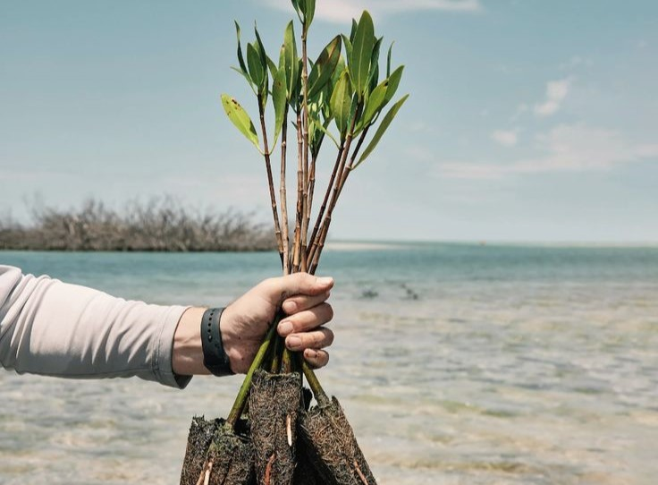
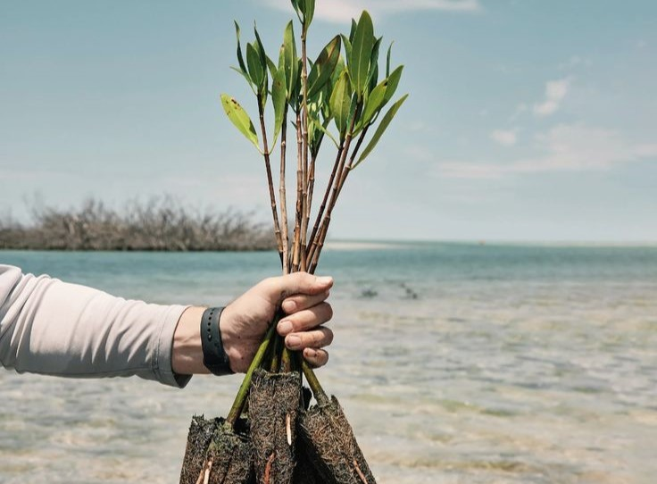

Apa itu mangrove?
Mangrove adalah tumbuhan yang tumbuh di wilayah pesisir, terutama di zona intertidal atau
wilayah pasang surut. Tumbuhan ini memiliki kemampuan khusus untuk tumbuh dan bertahan
hidup di lingkungan yang berkadar garam tinggi dan terkena erosi. Mangrove memiliki sistem
akar yang unik, yaitu akar tunjang yang mampu menjaga tumbuhan agar tetap tegak meskipun
terkena gelombang dan pasang surut yang tinggi. Selain itu, mangrove juga berfungsi sebagai
habitat berbagai jenis hewan laut dan sebagai pelindung pantai dari abrasi. Kehadiran mangrove
sangat penting untuk menjaga keberlangsungan lingkungan pesisir dan kehidupan manusia yang
tinggal di sekitarnya.


 
